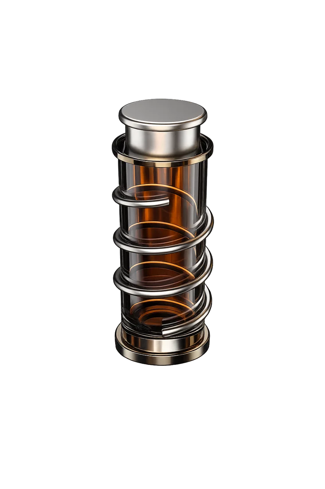

Unbound
Frasco de perfume
Unbound fue creado para L’Oréal Brandstorm 2026. Este proyecto en equipo busca transmitir una historia a través del diseño de un frasco: una historia de amor y evolución.
Nace a partir de una campaña centrada en la mujer y en el concepto de compromiso. Durante muchos años, las mujeres eran prometidas sin tener voz sobre su propio futuro. Aunque estos ideales han cambiado, en muchos casos ha quedado una percepción negativa del compromiso, asociada a la dependencia o la pérdida de libertad.
Este proyecto busca replantear esa idea, proponiendo el compromiso como una elección consciente, libre y personal, y no como una imposición.
Este mensaje se refleja en el diseño del frasco. El espiral exterior evoca una jaula, pero abierta, simbolizando que hoy las mujeres tienen el poder de decidir su propio camino. Elegir compartir la vida con alguien deja de ser una limitación para convertirse en una decisión propia, válida y libre.
L'Oréal Brandstorm 2026 · Proyecto en equipo